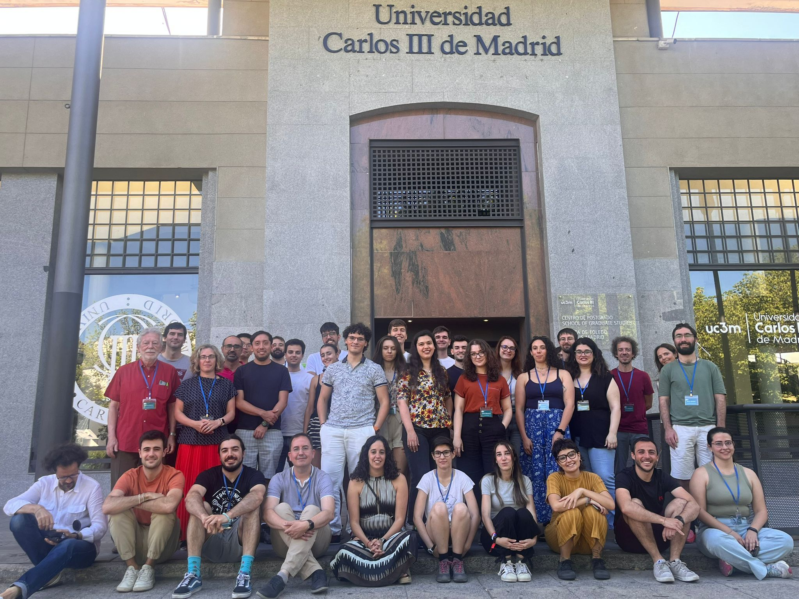
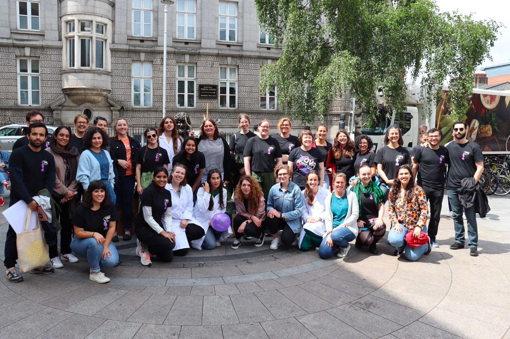
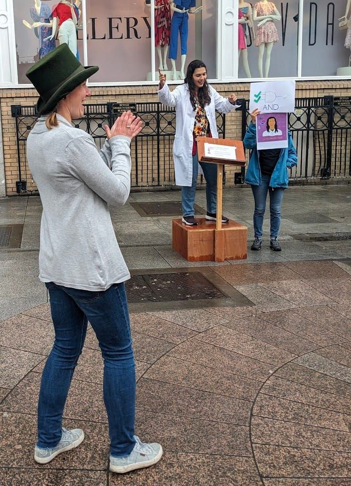

News and Events
Industry Placement at Arup
As part of my PhD programme with d-real, I completed a 3-month internship in industry. This placement was done in Arup as part of the Intelligent Mobility Team!
Arup was established in 1946 by Sir Ove Arup as Ove N. Arup Consulting Engineers. Arup is an employee-owned business, with all staff owning a stake in the company and part of a global profit share. They provide design, engineering, architecture, planning, and advisory services across every aspect of the built environment. Some high-profile projects of the company include the Sydney Opera House in Sydney, The Shard building in London, Centre Pompidou in Paris, Grand Canal Theatre in Dublin, among others. Arup has over 90 offices in 34 countries. Offices in Ireland were stablished in 1946, and has 4 offices located in Dublin, Cork, Galway and Limerick with more than 750 staff members, making it the biggest location in Europe.
I worked in the Advisory & Digital Services (ADS) department. Within this department, I was placed in the Assets & Operations Team. During the internship I mainly worked assisting in projects that have to do with Intelligent Mobility. The main task has been assisting in project management related to a project that was being deployed. I created technical notes, reports, and SOPs in a timely manner for various projects. I also assisted in the creation and execution of workshops regarding lessons learned from a previous project.

International Summer School on eXtended Reality Technology and eXperience (XRTX)
From July 8th - 11th 2024, I attended the Second Edition of the International Summer School on eXtended Reality Technology and eXperience (XRTX) at Universidad Carlos III de Madrid! We all had a wonderful time designing very creative archery VR apps! I think everyone also enjoyed the real-life experience as well.
Working as a team with Giulia Staggini, Alessandro Profili, Natalia Jakubiec was so much fun! Lectures were informative and useful, and the discussions I had during the poster sessions were so interesting!
Thank you to all the organizers and attendees, it was an experience to not forget!
Visit to The WayFinding Centre
On May 30th 2024 I was invited as part of the Intelligent Mobility team in Arup to visit the new WayFinding Centre in Dublin, Ireland.
This brand new centre focus on providing inclusive solutions in public transport to allow for independent mobility for all people.
It is great to see that spaces like this are available, with so many opportunities for collaboration and research!
If you want to know more about the Centre, visit their website.
The centre works as a sandbox to test out solutions and facilitate human-centered research. The facilities provide a test-bed for different types of transportation: Plane and airport infrastructure, Train carriage and platform, Double decker bus and bus stop, coach and coach stop, accessible taxi, and roads, crossings and streetscape.
Personal Branding Workshop
On April 3rd 2024 I attended teh Brand Yourself Workshop organized by Latinas in Tech - Dublin Chapter. Andrea McCabe was a great speaker and gave us great advice to help us stand out!
WIRI Research Showcase 2024
On March 21st 2024 I participated as a speaker in the Women in Research Ireland (WIRI) Research Showcase.
We had 13 presentations (including me) with such different topics of research! Getting to know all the knowledge that
is being generated by women in Ireland it's outstanding!
Also, professor Kalpana Shankar was the keynote speaker, giving us really good advice and reassuring us that
we are not alone on this academic journey! Thank you for all your wise words!
On my part, I talked about how VR can help overcome barriers that patients go through
when completing a home rehabilitation programme. The discussion afterwards was very enriching
and I'm glad to see that it is interesting to people outside my field!
Overall, I love that I get to participate on these events,
you can feel the support and kindness of each and every woman in research !
Advanced Digital Technologies Workshop - i2CAT
From the 4th to the 8th of March I was able to catch a good glimpse on the research
landscape in and around Barcelona. Thanks to i2CAT for receiving me and 12 other PhD researchers
in the Advanced Digital Technologies Workshop. We got to know the amazing research that is being done in i2CAT.
We were able to tour some labs and learn how the research ecosystem works. We visited ICFO for an overview on Quantum research,
then to the PMT Mediterranean Science and Technology Park, and there we even had the chance to see the Drone lab!
We also went to DFactory Barcelona to see their robotics and IoT labs,
and the work they do with different 3D printing technologies. This was followed by talks related
to different research lines in i2CAT, including Immersive and interactive technologies.
On the fourth day we visited Eurecat and saw the great impact their projects have had in the country.
Later that day, we also toured and learned about the research done in Universitat Oberta de Catalunya.
ACM International Conference in Multimodal Interaction 2023
I had the wonderful opportunity to participate in the Conference and Doctoral Consortium of the ICMI 2023 to present my PhD project progress. The event took place in Paris, France from the 9th to the 13th of October. Met wonderful and talented people, and got some nice suggestions too! If you want to check out the paper, you can click this link.
Soapbox Science Dublin 2023
On June 17th I had the pleasure of participating as a speaker at the Soapbox Science Dublin 2023, where 12 female and non-binary scientists talked about science in the open space of South King Street in Dublin City Centre. It was great to collaborate with brilliant scientists in such a variety of topics!
Even though it was a busy Saturday morning for people in the city, a lot of them stopped to hear us talk about how science is fun and can make a difference. I decided to talk about logic gates, to show people that learning engineering it's not so difficult if you start small.
Post-CHI 2023 Summer School in Extended Reality
I had the pleasure to attend the Post-CHI 2023 Summer School in Extended Reality that took place in
Copenhagen, Denmark from the 2nd to 4th of May 2023.
I met wonderful people with great ideas and projects, the whole experience was a great opportunity to talk
about crazy ideas and how XR can be a helpful tool to make them true.
Thank you to Teresa Hirzle and Joanna Bergström for all the work you put into organizing this event. And of course, big thank you to all the speakers! it was very insightful!
Spring School on Social XR - CWI
From March 13th to 17th 2023, I participated in the Social XR Spring School.
The program included topics such as the capturing and modelling of realistic avatars and their behavior,
coding and transmission techniques of volumetric video content, ethics for the design and development of responsible
social XR experiences, novel rending and interaction paradigms, and human factors and evaluation of experiences.
Together, they provided a holistic perspective, helping participants to better understand the area and to initiate
a network of collaboration to overcome current limitations of current real-time conferencing systems.
Attending to this Spring School was such a great experience! Getting to meet so many people
doing interesting research was so valuable to me. There were topics that I hadn't even thought about!
but all important to develop this field of XR into things that actually matter.
Thank you so much to the DIS group at the CWI for the lectures and hospitality, also for showing us a little bit of Amsterdam in the process.
I think I can speak for all the attendees that we enjoyed every bit of it!